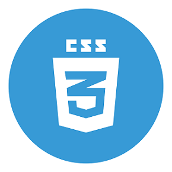
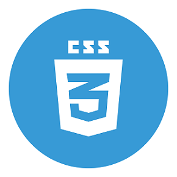

Szoftverfejlesztés és tesztelés
A már létező szoftverek gyakran nem képesek egy vállalkozás összes szükségletét kielégíteni, ezért felmerülhet az igény egy saját tervezésű szoftverre. Az egyedi elképzelések alapján fejlesztett szoftverek nem tartalmaznak felesleges funkciókat, elemeket. A gyakorlat azt mutatja, hogy akár pár hónap alatt is képes megtérülni egy egyedi fejlesztésű folyamat támogató rendszer, mivel képes a vállalkozás hatékonyságát drasztikusan növelni, illetve költségeit csökkenteni.
Mi mindig a teljes erőnek és odafigyelésünket adjuk a tesztelésre és ezért a csapatunk csak maximum 3 szotverrrel dogoznak egyhuzamban.Ezzel garatáljuk a legmegfelelőbb és a legalaposabb tesztelést.
Egyedi szoftverfejlesztés közben, valamint minden lezár munkafázis után különböző teszteléseket végzünk, az átadás előtt azonban egy nagyobb és átfogóbb tesztelést szükséges elvégezni. Ebben a fázisban az elkészült szoftvert egészében vizsgáljuk. Összevetjük a specifikációban lefektetett terveket a megvalósult termékkel, kipróbálunk minden funkciót, illetve különböző eszközökön is kipróbáljuk a szoftvert a kompatibilitás és a megfelelő megjelenés érdekében. A belső tesztelést a felhasználói tesztelés követi. Amennyiben szükséges, elvégezzük a végső módosításokat az észrevételek alapján, majd, ha a terv és az elkészült szoftver megegyezik, a szoftver átadása következik.
A Leggyakrabban alkalmazott technológiák közé tartozik a:- Jmeter
- C#
- PHP
- Css
- MySQL

 
